Modern definitions of zero encompass various metaphors, reflecting its nuanced conceptualization across disciplines. It can be described as the "absence of all quantity or magnitude" and positioned as "the number between the set of all negative numbers and the set of all positive numbers." In essence, it serves as "the point of departure in reckoning" and marks "the point from which the graduation of a scale begins," akin to zeroing a rifle. Furthermore, zero signifies a "state of total absence or neutrality" and can be viewed as "something arbitrarily or conveniently designated as zero." Beyond its numerical implications, the "zero metaphor" symbolizes a state of equilibrium or resolution, suggesting the resolution of challenges or conflicts to the point of non-existence. This multifaceted understanding underscores its significance in various contexts, shaping perspectives on the universe and even concepts of divinity. [3]
The emergence of zero traverses distinct stages, showing its evolution within cognitive frameworks. Initially, it signifies the absence of a stimulus, akin to a mental or neural resting state devoid of specific attributes. As understanding progresses, this absence gains meaning as a significant behavioral category, though devoid of quantitative relevance initially. Subsequently, "nothing" acquires quantitative significance, represented as an empty set positioned at the lower end of a number line. This symbolic representation eventually extends to become the number zero, marking a pivotal advancement in mathematical abstraction and paving the way for comprehensive number theory [4].
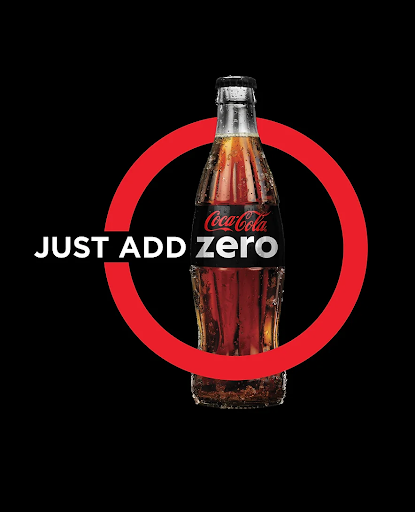
As an example, consider Coke Zero:
- It is advertised to us as the absence of something (sugar) adding to our overall experience
- Zero then can mean an increase in value if the zero in question is “harmful” to us
Historical analysis reveals a complex journey of zero, marked by rare and fragmented appearances intertwined with practical and philosophical considerations. Mathematics was based on real world problems and solutions. If ancient peoples needed to figure out how many seeds they would need for a field, the answer was almost never 0 or -18. Thus, there was a lack of abstraction in early mathematics.
In ancient Babylonia, zero surfaces as an accounting device, integral for efficient record-keeping within a sexagesimal numeral system [5]. Despite understanding the notion of nothingness, its status as a number remains ambiguous, primarily serving as a placeholder rather than a distinct numerical entity. This placeholder nature allowed for large values to be interpreted correctly. For example, Compared to our modern notation, early Babylonians could not distinguish between 2106 and 216 due to a lack of symbol for 0. Context would have to show which was intended [1].
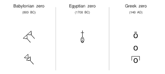
Similarly, ancient Greece, characterized by a focus on more abstract concepts such as geometry, acknowledges zero's presence but predominantly as a philosophical concept rather than a mathematical one, reflecting skepticism towards its implications. This was apparent in zeros' use being largely dominated by merchants rather than mathematicians. In particular, Pythagoras and his followers were skeptical of the concept of zero since it contradicted their belief in the perfection of numbers. Numbers were seen as fundamental principles governing the universe, and each number held significant symbolic and metaphysical meaning. Zero, as a number representing absence or nothingness, contradicted the idea of numbers as perfect and complete entities [5].
Indian mathematics marks a significant milestone with the birth of modern numerals and the formalization of zero (‘Shunya’) as a number around 650 AD [2]. The Indian numeral system, similar to the Babylonians, utilized a place-value system where zero, denoted as a dot initially, represented an empty place, enabling precise notation and arithmetic operations. Mathematicians like Brahmagupta, Mahavira, and Bhaskara contributed to its mathematical usage, though encountering conceptual challenges particularly concerning division by zero. Brahmagupta struggled with division, either incorrectly hypothesizing that "0/0 = 0" or ignoring the problem entirely stating that "n divided by zero is equal to n/0". 200 years later, Mahavira says that “a number remains unchanged when divided by zero” which is also incorrect. 300 years after that, Bhaskara states that “n/0 = infinity” with his reasoning being that “In this quantity consisting of that which has zero for its divisor, there is no alteration, though many may be inserted or extracted; as no change takes place in the infinite and immutable God when worlds are created or destroyed”. It's rather poetic that pondering the nature of zero led mathematicians to the gateways of infinity [1].
Though significant advancements were made, there was still much skepticism. The idea of ‘shunya’ could be perceived as contradicting certain philosophical and religious doctrines that emphasized the importance of existence and substance. Thus, the adoption of new mathematical concepts, such as zero, often faced resistance due to adherence to traditional methods. Unfortunately, the mystery of division by zero would continue to elude mathematicians for centuries to come [2].
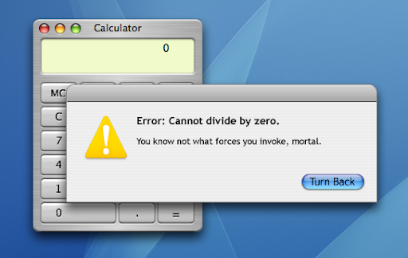
Arabian and European mathematical traditions were deeply intertwined. While Indian mathematicians were the pioneers, Arabian mathematicians and astronomers can be credited with preserving and introducing these ideas to Europe. Furthermore, during the Islamic golden age, great advancements were made in regards to Arithmetic, Algebra, Algorithms and Quadratics, specifically by mathematician Al-Khawarizmi. This Arabian influence can be seen in the coining of the term ‘Arabic numeral’, even though they had originated in India. However, both Europe and Arabia faced similar challenges in terms of the skepticism towards zero. Islam, like other Abrahamic religions, places importance on the notion of creation and the existence of everything as part of God's design. The idea of zero, representing nothingness or absence, could be seen as conflicting with this worldview. There were concerns about whether zero implied a void or emptiness that contradicted the idea of God's creation [6]. Similarly, European theologians expressed concerns about zero's implications for theological concepts such as creation and the nature of God. The idea of zero as representing nothingness or void raised theological questions about the nature of existence and the divine order. Furthermore, resistance toward zero stemmed from cultural and philosophical biases inherited from Greek thought.
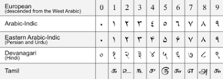
Jumping ahead several centuries, the symbol zero has a number of applications in the space of computers, down even to their fundamentals. At their core, computers rely on switches: notably, the state of these switches as off or on, open or closed, presently running current or not. More commonly, and pertinent to this study, is that these states are most commonly known as “0” or “1” [7]. It is conceivable, then, that maintaining a sequence of switch states, can be used to store information. It would have to be transcribed in some way to a sequence of 0s and 1s, but it is no different to storing information in the same word form as this report. In order to use this information, however, it needs to take these sequences of switch states and produce new sequences.
At their lowest level this is realized through the logic gate; built using transistors, logic gates take one or two signals and produce an output. [7] For instance, the AND gate takes two signals. If both input signals are 1 (or “on”) then the output signal is 1, and in all other cases - if one or both signals is 0 (or “off”) then the output signal is 0.
Another is the NOT gate, also known as an inverter, that takes one input and outputs the opposite signal. [7]
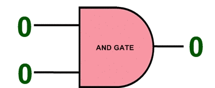
More logical operators can be built using these gates, like NOT, NOR, XOR, [7] and these gates can build even more complicated machines, like this adder for 4-bit binary numbers
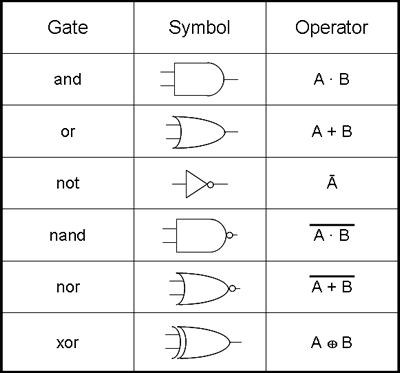
So one can surmise that there are no restrictions in the complexity of these circuit constructions theoretically, our case being the capabilities of the device you are using to read this. This has huge implications for the use of 0 in computers: it is half the concept needed to enable computer controlled devices. Especially today, computers are capable of anything that may interface with them, limited only by the speed at which they can process information. Yet this processing power continues to grow year over year - Moore’s law, made the prediction that the number of transistors able to be used in an integrated circuit will double every two years without increasing (very much) in cost, and this has held for the past 50 years [8]. The problem with this representation, then, is it is never really worked with in this context. In personal experience, a majority of a programmer's experience is with much higher level languages that aren’t concerned with binary values. Working at the transistor level requires specialization, so it isn’t able to be used very commonly. Even so, it’s fascinating to know what power 0 has in the digital realm.
In sifting through each of these interpretations, we noticed and want to present an interpretation that isn’t
commonly explored (or, admittedly, is hard to search for). In visual representations of any amount, there is an
assumed level of context needed to understand it. For instance, this is a picture of a bowl with 5 apples in it:
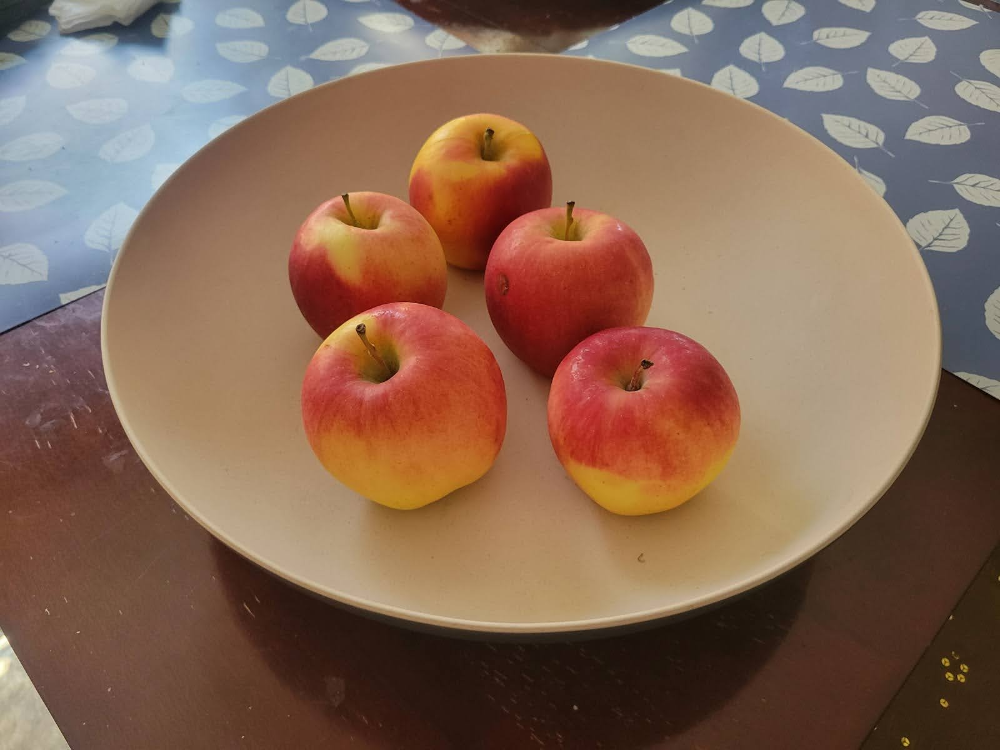
Naturally, one would see the apples and count their individual instances, however, one can imply that it is
served on the basis of knowing what the bowl without apples would look like.
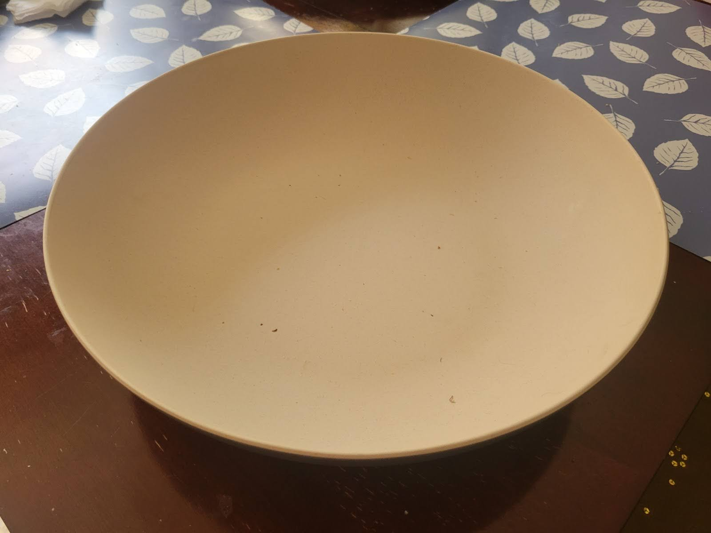
This is trivial, as we established, since the lack of apples in the bowl is uninteresting. It does lead us to
consider, though, that the apples were not always in the bowl - the bowl had to be made, sold, and brought to
the kitchen table in order to be filled with apples. Before there were 3 apples there were 0 apples, making
zero the origin, or point of reference, for the number of apples in the bowl.
The Alberta middle school curriculum defines “Origin” as “[the point] in a coordinate plane where the x-axis and the y-axis intersect.” and “The origin is located at the coordinates ( 0, 0)” [9]. Relatably, there are a number of software tools that default to the origin at (0, 0) or (0, 0, 0). Some examples here are screenshots from desmos, a popular online graphing calculator, and Blender, a 3D modeling tool.
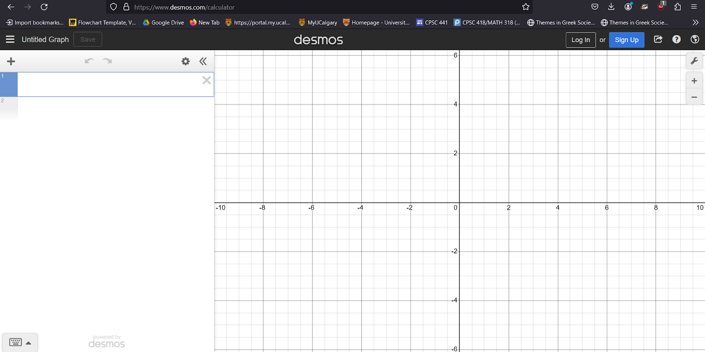
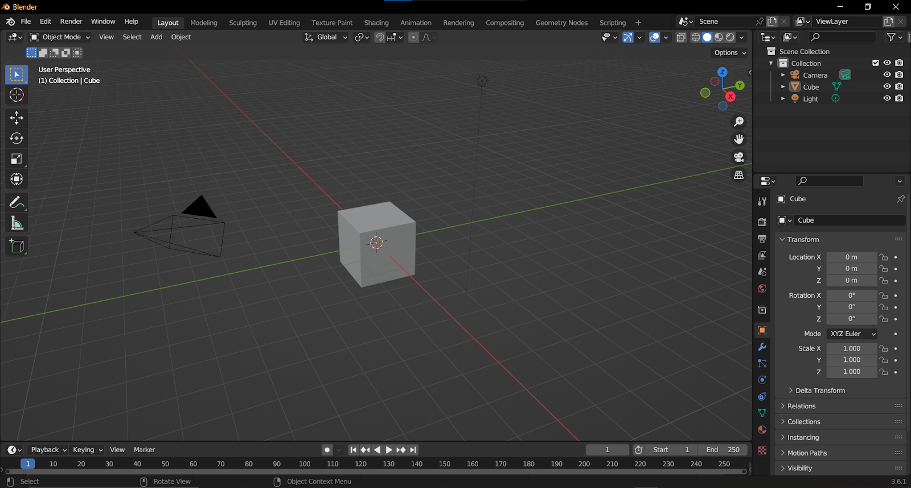
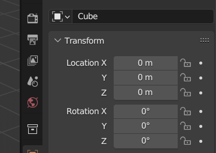
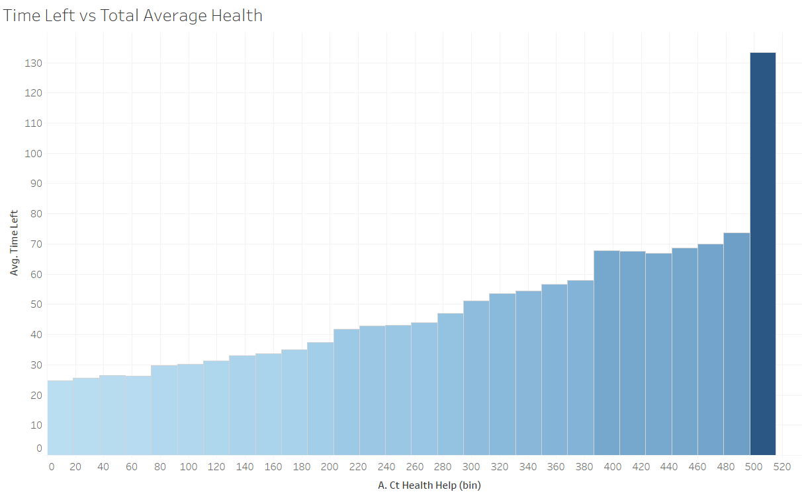
We could also consider data visualization tools like histograms. In order to effectively show the magnitude of difference between values, the start of its axis should be zero, otherwise it could be taken as misleading its reader [10].
Additionally, we can consider zero indexing in computer programming: the best example may be the C programming language.
C has the concept of "pointers", which allows for the manipulation and use of raw memory addresses. This allows for very
precise memory manipulation; given a memory address via pointer one can use offsets to access any allocated memory both
behind and ahead of it regardless of data type being stored, or the object holding this data [12].
These examples aim to present zero as the de-facto reference point when it comes to the visualization of information, which naturally allows us to understand the scale or magnitude of information that is presented to us. It requires, however, the concept of absence to make sense For instance, Euclid’s definition of a number does not allow for the concept of zero - simply the “unit” and multitudes of them [11]. Likewise, we can consider the difference between a void space and one with a number of any-sided shapes, but can we consider a shape with 0 sides? Would it exist?
In the end, this way of defining zero can be seen as an extension of the ancient interpretations, to be used as a
practical tool when convenient, but if we consider this use with information, it then requires the abstract definitions
that we have managed to develop in order to be useful.
[1] Josa. (n.d.). http://www.josa.ro/docs/josa_2008_1/a.22_A_HISTORY_OF_ZERO.pdf
[2] Sid. (n.d.-b). https://www.sid.ir/EN/VEWSSID/J_pdf/12392000601.pdf
[3] Merriam-Webster. (n.d.). Zero definition & meaning. Merriam-Webster. https://www.merriam-webster.com/dictionary/zero
[4] Representing something out of nothing: The dawning of zero: Trends in cognitive sciences. (n.d.-b). https://www.cell.com/trends/cognitive-sciences/fulltext/S1364-6613(16)30125-5
[5] Encyclopædia Britannica, inc. (n.d.). Zero. Encyclopædia Britannica. https://www.britannica.com/science/zero-mathematics
[6] Zarepour, M. S. (2022, Apr 9). Arabic and Islamic philosophy of Mathematics. Stanford Encyclopedia of Philosophy. https://plato.stanford.edu/entries/arabic-islamic-phil-math/
[7] Lague, Sebastian (2020, Nov 16) How Computers Work [Video File]. Youtube. https://www.youtube.com/watch?v=QZwneRb-zqA
[8] “Moore’s Law.” Intel, 18 Sep 2023, https://www.intel.com/content/www/us/en/newsroom/resources/moores-law.html#gs.79lfh6. Accessed Apr 7 2024.
[9] “Origin” Government of Alberta, n.d. https://www.learnalberta.ca/content/memg/division03/Origin/index.html. Accessed Apr 7 2024.
[10] “Bar Charts.” Tableau, n.d. https://www.tableau.com/data-insights/reference-library/visual-analytics/charts/bar-charts. Accessed Apr 7 2024.
[11] Joyce, David. “Euclid’s Elements, Book VII, Definitions 1 and 2” Department of Mathematics and Computer Science, Clark University, n.d. https://mathcs.clarku.edu/~djoyce/java/elements/bookVII/defVII1.html. Accessed Apr 7 2024
[12] “C Pointers and Arrays” W3Schools, n.d. https://www.w3schools.com/c/c_pointers_arrays.php. Accessed Apr 9 2024
Images used with the intent of illustrative teaching, falling under
Fair Dealing.